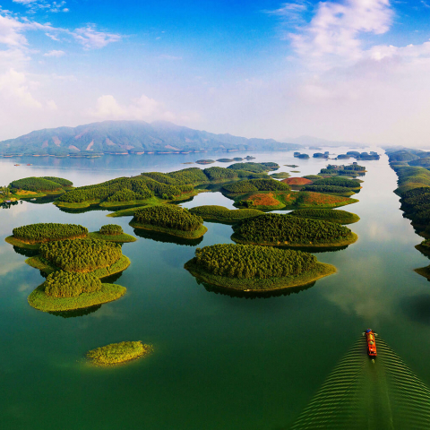

HỒ THÁC BÀ
Mù Cang Chải có thể là cái tên đầu tiên xuất hiện trong tâm trí bạn khi nhắc đến Yên Bái. Huyện miền núi nhỏ bé ở vùng Tây Bắc này nổi tiếng với những thửa ruộng bậc thang, khung cảnh ngoạn mục mùa nước đổ và lễ hội dù lượn trên đèo Khau Phạ, đã để lại ấn tượng sâu đậm trong lòng du khách. Tuy nhiên, ở Yên Bái còn một địa điểm khác để du khách “xanh” hơn và tìm đến sự bình yên: Hồ Thác Bà.
Hồ Thác Bà là một trong ba hồ nhân tạo lớn nhất Việt Nam, được hình thành trong quá trình xây dựng Nhà máy thủy điện Thác Bà. Hồ nằm trên địa phận hai huyện Yên Bình và Lục Yên, có diện tích mặt nước gần 20.000 ha, gồm hơn 1.300 hòn đảo lớn nhỏ phủ xanh và hệ thống hang động ẩn sâu trong lòng núi đá vôi. Bao quanh hồ là núi non xanh mướt và vách đá vôi hùng vĩ, biến Thác Bà thành một điểm đến mới mẻ cho du khách bên cạnh Mù Cang Chải.
Khoảng 13 dân tộc thiểu số sinh sống tại đây, gồm Tày, Nùng, Mông, Dao, Phù Lá, Cao Lan… Họ sống dọc sườn núi hoặc ven hồ. Ngoài các hoạt động như câu cá, chèo thuyền, du khách còn có thể ghé thăm các bản làng để tìm hiểu truyền thống, lễ hội, nhà sàn và lối sống của người dân tộc.

Bạn có thể đến Hồ Thác Bà vào bất cứ thời điểm nào trong năm vì khí hậu nơi đây có bốn mùa rõ rệt và nhiệt độ khá ổn định. Nếu yêu thích lễ hội, tháng 1 là thời điểm lý tưởng để tham dự lễ hội lớn tại đền Thác Bà. Hồ Thác Bà cũng rất phù hợp cho chuyến đi trong ngày hoặc kỳ nghỉ cuối tuần.
Hồ Thác Bà nằm cách Hà Nội khoảng 130 km, nên việc di chuyển từ Hà Nội đến hồ Thác Bà khá dễ dàng. Cách thuận tiện nhất để đến đây là bằng ô tô. Ngoài ra, du khách có thể đi xe buýt, taxi hoặc xe máy.
Chèo thuyền trên hồ
Đi thuyền quanh hồ là cách tốt nhất để thưởng ngoạn khung cảnh tuyệt đẹp và quan sát động vật hoang dã. Hồ có nhiều hòn đảo có thể khám phá bằng thuyền. Trong chuyến đi, đừng quên ghé Nhà máy thủy điện Thác Bà – công trình thủy điện đầu tiên của Việt Nam. Thuyền có thể thuê tại làng Hương Lý (Yên Bình).
Ngắm cảnh từ trên cao
Nếu muốn trải nghiệm năng động hơn, Hồ Thác Bà có nhiều hoạt động như bơi, chèo kayak, câu cá hoặc trekking theo các cung đường quanh hồ để ngắm cảnh. Hang Thủy Tiên – nằm giữa hồ – là điểm không thể bỏ lỡ, vừa có cảnh quan đẹp vừa nhìn ra hồ. Núi Cao Biền – ngọn núi cao nhất bao quanh Thác Bà – cũng là nơi lý tưởng để ngắm toàn cảnh, với hành trình leo khoảng 3,5 giờ lên đỉnh, phóng tầm mắt ra quần đảo xanh ngát giữa hồ.
Dạo bộ văn hóa ở làng Ngòi Tụ
Ngòi Tụ là nơi sinh sống của 5 dân tộc (chủ yếu là Dao quần trắng). Tại đây, bạn sẽ được trải nghiệm cuộc sống bình yên dưới mái nhà sàn ẩn mình trong rừng cọ, học nghề đan giỏ bắt tôm, và ngắm những cô gái Dao đôi má ửng hồng trong trang phục rực rỡ.
Khi màn đêm buông xuống, hãy trở thành người dân địa phương, ngồi bên đống lửa trại, lắng nghe những câu hát ru vang vọng khắp bản làng và thưởng thức xôi Lam, nộm hoa chuối rừng, gà nấu măng chua hay gỏi cá, gỏi tôm…
Tất cả những trải nghiệm này có vẻ quá du lịch nhưng nếu bạn thực sự tận hưởng chúng một mình, hãy thuận theo dòng chảy và trở thành một du khách, chúng rất đáng để bạn dành thời gian.